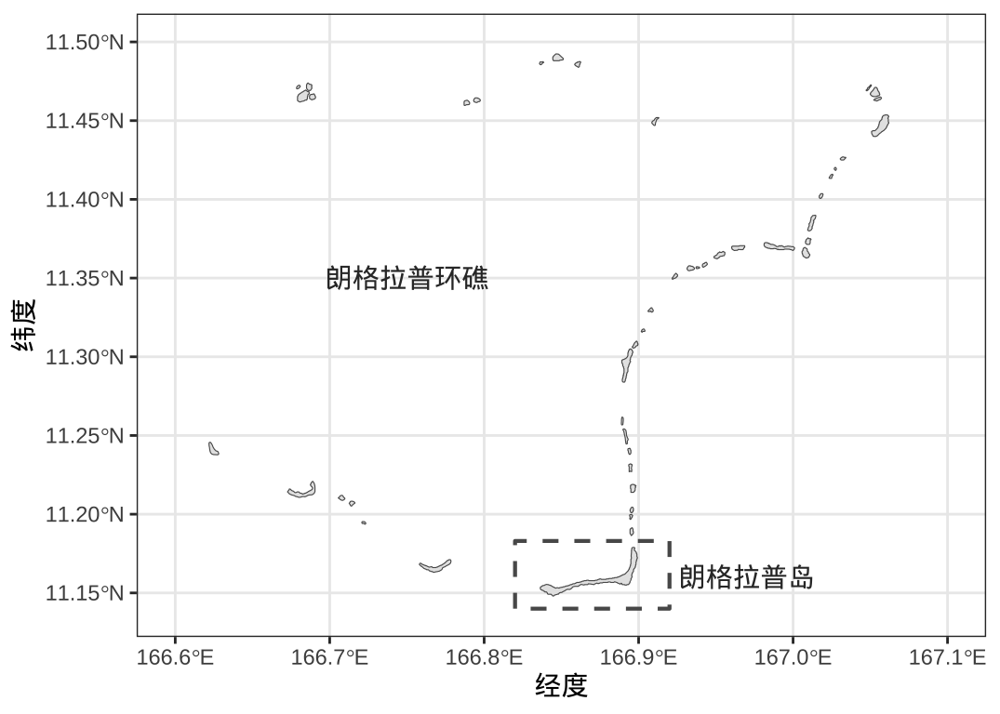

代码
# 从网站 https://gadm.org/ 下载国家各级行政区划数据
# geodata 包返回 SpatVector 类型的数据对象
mhl_map_gadm <- geodata::gadm(country = "MHL", level = 1, path = "data/")
library(sf)
# SpatVector 类型转为 sf 类型
mhl_map_gadm <- st_as_sf(mhl_map_gadm)
library(ggplot2)
# 添加虚线框用来圈选朗格拉普岛
rongelap_sfp <- st_sfc(st_polygon(x = list(rbind(
c(166.82, 11.14),
c(166.82, 11.183),
c(166.92, 11.183),
c(166.92, 11.14),
c(166.82, 11.14)
)), dim = "XY"), crs = 4326)
# 文本标记
text_df <- tibble::tribble(
~x, ~y, ~text,
166.75, 11.35, "朗格拉普环礁",
166.97, 11.16, "朗格拉普岛"
)
text_df <- as.data.frame(text_df)
text_sf <- st_as_sf(text_df, coords = c("x", "y"), dim = "XY", crs = 4326)
# 朗格拉普环礁
ggplot() +
geom_sf(data = mhl_map_gadm) +
geom_sf(data = rongelap_sfp, fill = NA, linewidth = 0.75, lty = 2) +
geom_sf_text(data = text_sf, aes(label = text), color = "gray20",
fun.geometry = sf::st_centroid) +
coord_sf(xlim = c(166.6, 167.1), ylim = c(11.14, 11.5)) +
theme_bw() +
labs(x = "经度", y = "纬度")
